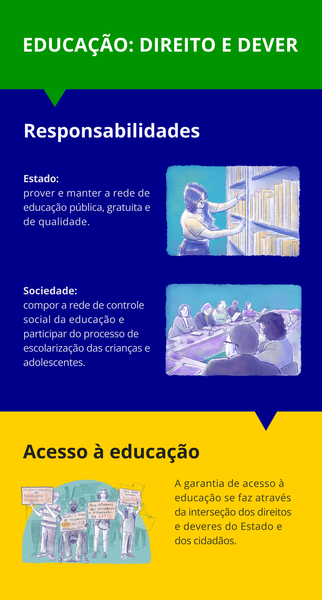

Participação na gestão como um direito e uma conquista
Para discutir a participação escolar na gestão, é preciso responder à perguntar: para que serve a educação? A resposta mais objetiva para isso é de Mikhail Epstein (2012)
Para educar humanos por humanos para o bem da humanidade
A educação é um direito de todos e um dever do Estado, da sociedade e das famílias, sendo então um processo de formação integral para além das áreas de conhecimentos e componentes curriculares. O ato de educar é um processo de aprender a viver, a construir projetos de vida, a viver juntos em instituições justas, a sonhar e a ser feliz.
Nossa LDBEN, Lei n.º 9.394/1966 (Brasil, 1996) estabelece, nos artigos 14 e 15, um conjunto de diretrizes e princípios que buscam garantir a participação da comunidade escolar e reafirmam a autonomia pedagógica, administrativa e de gestão financeira, observadas as normas gerais de direito financeiro público. Cabe a nós, educadores e gestores, chamar e organizar essa participação de todos os segmentos da comunidade enquanto estratégia de ensinagem (ensino-aprendizagem) e como compromisso de formar pessoas com espírito público, coletivo e democrático.
No artigo 14 da LDBEN (Brasil, 1996), está expresso que os estados, municípios e o Distrito Federal definirão as normas da gestão democrática do ensino público na Educação Básica, de acordo com as suas peculiaridades e conforme os seguintes princípios:
Título: Princípios da gestão democrática na Educação Básica
Fonte: Prosa (2025a).
O fórum dos Conselhos Escolares é um colegiado de caráter deliberativo que objetiva o fortalecimento dos Conselhos Escolares de sua circunscrição e a efetivação do processo democrático nas unidades educacionais e nas diferentes instâncias decisórias, com vistas a melhorar a qualidade da educação. Ele é norteado pelos princípios de democratização da gestão, do acesso e da permanência e de qualidade social da educação.
Considerando que os sistemas de ensino assegurarão progressivos graus de autonomia pedagógica e administrativa e de gestão financeira às unidades escolares públicas de educação básica que os integram, é possível – e necessário – que se amplie a participação dos segmentos mediante a instituição de espaços democráticos de participação, tais como:
- Assembleias consultivas e deliberativas com os diversos segmentos;
- Fóruns temáticos de reflexão e discussão;
- Reuniões periódicas com os segmentos;
- Comissões temáticas;
- Rodas de conversas;
- Círculos de cultura;
- Círculos de ciência;
- Seminários;
- Plenárias.
No segmento estudantil, é fundamental promover a auto-organização mediante escolhas de lideranças nas turmas, por etapa, por ano e por cursos, sempre em conjunto com o Grêmio Estudantil ou, nos casos das Instituições de Ensino Superior (IES), com os Diretórios Acadêmicos (DAs) e o Diretório Central de Estudantes (DCE). Promover a autonomia e a organização dos estudantes é formação integral de sujeitos para uma sociedade participativa e democrática.
A participação não significa ausência, superação ou eliminação do poder, mas outra forma de exercê-lo. Trata-se, segundo Pedro Demo (2001), de uma outra forma de intervir na realidade, que, por sua vez, passa por dois momentos cruciais: a) autocrítica, de corajosamente reconhecer suas tendências impositivas e, b) diálogo aberto com os interessados, já são vistos como clientela, alvo, objeto. O planejamento participativo não impede, por exemplo, que se busque convencer a comunidade da necessidade de determinada ação – desde que o processo de convencimento se faça dentro de um espaço de participação ampla.
Nesse sentido, participação é um processo de conquista, não somente na perspectiva da comunidade ou dos interessados, mas também do técnico administrativo, do professor, do pesquisador, do gestor e do intelectual. A liberdade só é verdadeira quando conquistada, e o mesmo se aplica à participação. Essa ideia fundamenta a dimensão básica da cidadania: não se trata apenas de deveres, mas também de direitos. Mas, por outro lado, não se pode focar apenas nos direitos, em vista de que também existem deveres, como afirma o educador Pedro Demo.
Conforme estabelece o artigo 205 da Constituição Federal do Brasil (Brasil, 1988), educação é um direito de todos e um dever do Estado, da sociedade e da família. Portanto, a educação comunitária e participativa significa, entre várias coisas, que, de um lado, o Estado se compromete a sustentar a necessária rede de atendimento – mediante políticas públicas de Estado e financiamento – e, de outro, que a sociedade assuma como conquista sua. Ela mesma será a primeira interessada em que nenhuma criança falte à escola, que o prédio seja digno, que a biblioteca funcione, que a professora seja capaz e bem paga, que o material seja adequado e montado, tanto quanto possível, pela própria comunidade.
Não é só a escola que educa, mas a cidade e as comunidades também. Garantir e viabilizar formas de participação social é um direito, uma conquista e um comprometimento de todos para com o acesso ao direito à educação. E essa participação precisa ser institucionalizada para não depender da vontade política dos gestores. Abordaremos e refletiremos sobre a institucionalização da participação a seguir.

Título: Educação - direito e dever
Fonte: Prosa (2025d).
Elaboração: Prosa (2025b).